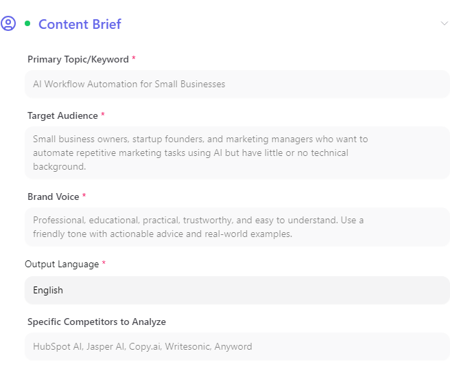
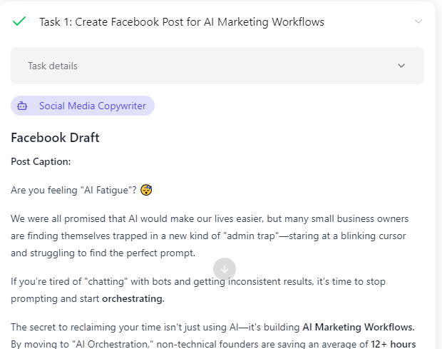
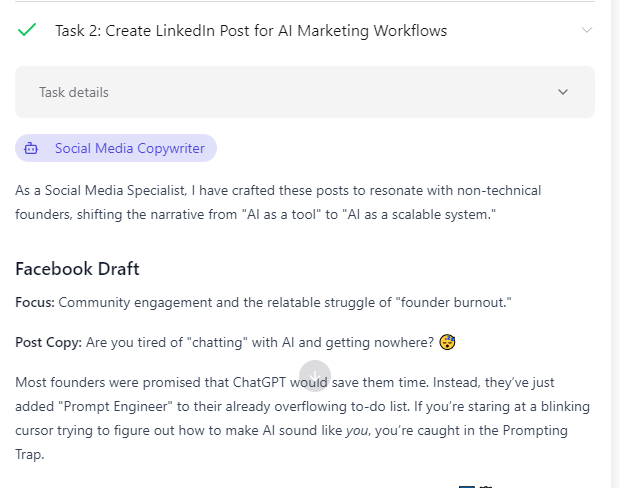

Suy luận kiến trúc điều phối của PAL (orchestration loop, tool interface, context/memory, guardrails, human-in-the-loop) dựa trên đối chiếu workflow JSON export và HTML runtime của một lần chạy thực tế. Mỗi claim được gắn evidence cụ thể và mức độ tin cậy.
Sơ đồ tách rõ 5 lớp: human interaction, control-flow graph (JSON Edges), data-flow / reference resolution, tool loop bên trong agent, và orchestrator-worker delegation. Node/edge không có bằng chứng trực tiếp được đánh dấu riêng.
Mỗi hypothesis gắn evidence, nguồn (JSON/HTML), và mức độ tin cậy. Card có badge carried-over nghĩa là evidence gốc không được trích lại tường minh trong bộ tài liệu này — cần đọc thận trọng hơn các card khác.
14 finding đầy đủ, mỗi finding theo cấu trúc Finding → Evidence → Impact → Confidence. Finding 10–14 (guardrails) được viền màu cam để nhóm thị giác riêng, vì đây là khía cạnh đề bài yêu cầu tường minh.
Finding: Workflow là một graph tuyến tính gồm sáu node và năm cạnh, không có nhánh.
"Edges": [
{ "sourceNodeId": "...ad5", "targetNodeId": "...ad6" },
{ "sourceNodeId": "...ad6", "targetNodeId": "...ad7" },
{ "sourceNodeId": "...ad7", "targetNodeId": "...ad8" },
{ "sourceNodeId": "...ad8", "targetNodeId": "...ad9" },
{ "sourceNodeId": "...ad9", "targetNodeId": "...ada" }
]
ad5 10:18:58.574Z → 10:18:58.994Z ad6 10:19:10.149Z → 10:19:40.393Z ad7 10:19:43.870Z → 10:20:05.277Z ad8 10:20:08.666Z → 10:20:40.189Z ad9 10:20:43.414Z → 10:21:09.873Z ada 10:21:13.501Z → 10:23:33.828Z
Impact: JSON biến topology từ inference thành cấu hình trực tiếp; HTML xác nhận các node thực sự chạy không overlap, đúng thứ tự graph.
Finding: Control dependency dùng Edges; data dependency dùng typed reference trong prompt.
Control edge: { "sourceNodeId": "...ad6", "targetNodeId": "...ad7" }
Data reference:
@[Market & Competitor Research](type=WORKFLOW_NODE&workflowNodeId=6a58ac59185298d443590ad6)
Human-input reference (namespace khác):
@[Primary Topic/Keyword](type=WORKFLOW_HUMAN_INPUT_FIELD&workflowHumanInputFieldId=6a58ac5c185298d443590ae3)
Impact: Kiến trúc gồm hai lớp — (1) scheduler đọc Edges để quyết định thứ tự node, (2) reference resolver đọc typed ID để materialize dữ liệu vào prompt. 18/18 references trong JSON đều trỏ đến ID tồn tại, không có dangling reference.
Finding: Mỗi node khai báo cụ thể input nào nó cần thông qua typed reference, không nhận toàn bộ transcript.
"role":"user","parts":[{"type":"text","text":"Conduct a deep research report on
AI Workflow Automation for Small Businesses for the target audience: Small
business owners... Analyze these competitors: HubSpot AI, Jasper AI, Copy.ai,
Writesonic, Anyword. Write in \"English\"."}]
Impact: Bằng chứng phù hợp với explicit/selective context assembly (template + selected predecessor output + selected input fields → execution prompt). Không chứng minh được payload cuối/truncation.

Impact: Sửa lại kết luận sai của báo cáo trước ("5 trường bắt buộc").
{ "label": "Content Brief", "type": "HUMAN_INPUT",
"HumanInputNode": { "id": "6a58ac5c185298d443590ae2", "Fields": [...] } }
"waitState":null,"waiterObservedAt":null, "waitResumeRequestedAt":null,"waitResumeAckedAt":null
Impact: HITL ban đầu là một phần orchestration graph, không chỉ UI affordance. Không có intermediate wait/approval event trong run được ghi lại.
"LoopNode": null, "RouterNode": null, "OrchestratorWorkerNode": null, "EvaluatorOptimizerNode": null, "GateNode": null, "ChatNode": null, "ArtifactNode": null, "InfoNode": null, "StickyNoteNode": null
Impact: Xác nhận workflow này không cấu hình loop/router/gate/evaluator/chat/artifact node riêng. Sự tồn tại của các field schema là bằng chứng PAL data model nhận diện các loại node này trên toàn nền tảng — nhưng runtime semantics của chúng không quan sát được từ run này.
"type": "ORCHESTRATOR_WORKER", "orchestratorPrompt": "Analyze the final article from @[SEO & Quality Review] ... and delegate the creation of distribution materials (Facebook post, LinkedIn post, and Newsletter) to the specialists."


Impact: JSON xác nhận intent cấu hình; HTML xác nhận runtime tương ứng. Lưu ý: agentId cho task index 1 (Facebook) không xuất hiện trực tiếp trong đoạn worker-record trích ở Finding này — gán "Social Media Copywriter" cho Facebook suy ra từ WorkerAgents list (agentId ...ae0 = Social Media Copywriter), không phải từ chính bản ghi task 1.
Finding: Agent node trong JSON chỉ chứa id + prompt. Không có: agentId, system prompt, tools, knowledge sources, memory settings, model ID, temperature, permissions, maxTaskCount, retry/timeout/concurrency, execution timestamps, outputs.
"synthesizerPrompt":null,"maxTaskCount":10,"OrchestratorAgent":{"id":"...adf"}
"isMemoryEnabled":false,"languageModelId":null,"maxTokens":null,
"temperature":null,"isBrowserUseEnabled":false,"isComputerUseEnabled":false
Impact: Sự vắng mặt trong JSON không được dùng để kết luận capability không tồn tại — JSON và HTML bổ sung cho nhau, không mâu thuẫn.
{ "label": "Output Language", "type": "SELECT", "required": true, "config": null }
Impact: Không biết danh sách ngôn ngữ hợp lệ, giá trị mặc định, hay cách UI validate lựa chọn — chỉ biết giá trị đã chọn.
Input: {"tool_name":"search_news","category":"api_action","tool_parameters":{}}
Output: {"error":{"message":"Validation Error: Query must be at least 1 character(s)"}}
Impact: Có ít nhất một validation boundary cho required tool parameters. Không xác định được đây là PAL tự thực thi hay tool provider trả về.
Input: {"tool_name":"search_news","tool_parameters":
{"query":"AI workflow automation trends small business 2024 2025"}}
Output: {"status":"error","code":"rateLimited","message":"You have made too
many requests recently. Developer accounts are limited to 100
requests over a 24 hour period (50 requests available every 12
hours). Please upgrade to a paid plan if you need more requests."}
Node status ngay sau đó: "status":"COMPLETED"
Output cuối vẫn có: "Market Research Report: AI Workflow Automation..."
Impact: Rate limit là guardrail thực tế ở external tool/provider boundary. PAL giữ lỗi ở dạng structured result và không tự động fail toàn node — agent vẫn tạo output cuối cùng. Không rõ đây là workflow-level retry hay agent tự quyết định tiếp tục.
"instructions": "To use a found tool, call use_workspace_tool with the exact tool_name, category, and required parameters. For composio tools, also include the app_name. Only use a tool if its description clearly matches what you need."
Impact: Instruction-level guardrail tại tool interface. HTML xác nhận instruction được cung cấp, nhưng không chứng minh hard enforcement với mọi phần của instruction.
"forceGetContextFromKnowledgeSources":null,"isMemoryEnabled":false, "languageModelId":null,"maxTokens":null,"temperature":null, "imageAspectRatio":null,"isBrowserUseEnabled":false,"isComputerUseEnabled":false
Impact: Đối với agent/run được quan sát: memory, browser use, computer use đều tắt; không có forced knowledge-source context. Evidence xác nhận configuration state, không chứng minh enforcement (không có blocked-attempt trace).
"orchestratorAgentId":"6a58ac5b185298d443590adf","synthesizerPrompt":null,
"maxTaskCount":10,"OrchestratorAgent":{"id":"6a58ac5b185298d443590adf"}
Impact: maxTaskCount là bounded-delegation guardrail giới hạn fan-out của orchestrator. Run chỉ tạo 3/10 task — không quan sát được hành vi khi vượt ngưỡng.